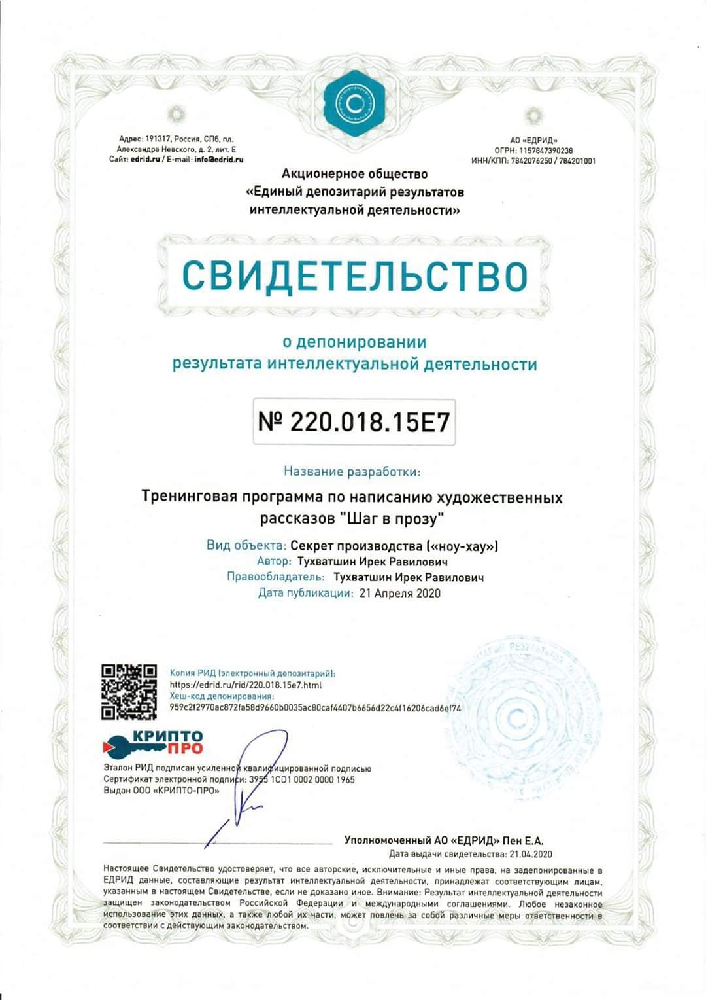

Откройте в себе писателя
Я приглашаю Вас познакомиться с основами художественной прозы, научиться создавать литературные истории и воплощать свои замыслы в законченных произведениях.
Меня зовут Эрик Хват. Я автор проекта «Мастер слова» и создатель тренинга «Шаг в прозу». Я разработал эту программу для тех, кто хочет уверенно сочинять собственные художественные рассказы.
Тренинг предназначен для тех, кто любит читать художественную литературу, фантазировать и придумывать разные истории, но пока не уверен в своих писательских способностях.
Вам не обязательно иметь опыт литературного творчества. На тренинге я познакомлю Вас с основами создания художественных рассказов и помогу пройти путь от первоначального замысла до законченного произведения.
На тренинге Вы познакомитесь с основами творчества и искусства, узнаете, что такое эстетический вкус и как его развивать.
Затем мы перейдём к художественной литературе. Вы узнаете, из каких элементов складывается рассказ, как формируется сюжет, создаются персонажи и художественные образы.
Вы научитесь выбирать тему, формулировать авторский замысел, составлять фабулу и сценарий будущего произведения. Мы разберём, как выстраивать повествование от завязки до кульминации и развязки, как сочетать диалоги, размышления персонажей и описание происходящих событий.
Вы также освоите приёмы создания художественных образов и научитесь использовать их в повествовании, не перегружая текст.
Главным результатом станет Ваш собственный небольшой художественный рассказ с полноценным сюжетом и одним или несколькими персонажами. Жанр и способ повествования Вы выберете самостоятельно.
Сначала я познакомлю Вас с общими понятиями творчества и искусства. Мы рассмотрим, чем они отличаются друг от друга и какую роль эстетический вкус играет в восприятии художественных произведений.
В программу входит практическое упражнение для развития эстетического вкуса и наблюдательности. Мы потренируем этот навык. Вы получите инструкцию и будете выполнять упражнение самостоятельно. После тренинга Вы сможете возвращаться к этой практике в любое время.
После этого мы перейдём непосредственно к литературе. Вы познакомитесь с особенностями художественной прозы, устройством рассказа и основными средствами литературной выразительности.
Прежде чем приступить к написанию, мы определим тему и сформулируем замысел будущего произведения.
Вы научитесь составлять фабулу и сценарий рассказа, продумывать последовательность событий и создавать персонажей. Мы рассмотрим, как построить сюжет, чтобы история развивалась последовательно и приводила к логичной и выразительной развязке.
Вы самостоятельно выберете жанр, количество персонажей и способ повествования. Программа не ограничивает Ваш творческий выбор.
Основная практическая работа будет посвящена созданию собственного художественного произведения.
Вы будете писать рассказ самостоятельно, постепенно создавая его отдельные части между нашими встречами. На встречах мы будем обсуждать результаты Вашей работы, разбирать возникшие вопросы и определять, над чем предстоит поработать.
Особое внимание мы уделим диалогам, размышлениям персонажей, динамике повествования и художественным образам. Вы научитесь не просто пересказывать события, а показывать происходящее через поступки, речь и реакции героев.
После завершения первоначальной работы мы перейдём к редактуре произведения.
Мы вместе рассмотрим Ваш рассказ с позиции потенциального читателя. Я буду задавать вопросы, которые помогут нам обнаружить неясные моменты, недостаточно раскрытые эпизоды и другие особенности текста, требующие доработки.
Мы вместе обсудим мои замечания и внесём необходимые изменения. Вы сможете увидеть собственное произведение со стороны и довести рассказ до законченного литературного текста.
Тренинг проходит в индивидуальном премиальном формате. Каждая встреча состоится онлайн по видеосвязи и будет длиться от 2 до 2,5 часов.
Дату и время каждой встречи мы будем согласовывать отдельно. Программа тренинга остаётся единой, но темп работы будет зависеть от Вашей индивидуальной скорости освоения материала.
В дальнейшем я планирую запустить и групповой формат онлайн-тренингов.
Между встречами Вы будете выполнять практические задания и самостоятельно работать над рассказом.
На следующей встрече мы вместе разберём результаты Вашей работы, обсудим возникшие вопросы и найдём решения затруднений.
Такой формат позволит Вам постепенно осваивать литературные приёмы и последовательно создавать собственное произведение.
Я подготовил материалы, которые помогут Вам освоить основы художественной прозы и выполнять практические задания. Вы будете получать их постепенно, по мере прохождения тренинга.
После завершения занятий все материалы останутся у Вас. Вы сможете пользоваться ими в личных целях и возвращаться к ним в дальнейшем.
Материалы и авторская технология тренинга предназначены для личного использования. Их нельзя передавать третьим лицам, публиковать или распространять.
Главным результатом тренинга станет написанный и отредактированный Вами художественный рассказ.
После завершения работы я попрошу Вас поделиться отзывом о тренинге в свободной форме. В обмен на отзыв Вы получите персональную именную грамоту.
В грамоте будут указаны Ваше имя, название рассказа, отрывок из произведения, дата завершения тренинга и моя подпись.
После завершения тренинга Вы сможете обращаться ко мне за технической поддержкой в разумных пределах.
Я помогу Вам разобраться с использованием полученных материалов и применением освоенной технологии в дальнейшей самостоятельной работе.
Тренинг «Шаг в прозу» проходит индивидуально в онлайн-формате. Для участия мы согласуем удобное для Вас время первой встречи и обсудим организационные условия.
В качестве бонуса к гайду «Создавайте свои рассказы» Вы получите скидку 10% на тренинг.
Если Вы хотите узнать подробности программы и записаться на тренинг, свяжитесь со мной через раздел «Контакты».
Семь понятий, на которых держится рассказ, и шесть шагов от темы и замысла до редактуры. Цена 650 ₽.
Подробнее
Программа «Шаг в прозу» зарегистрирована как ноу-хау (секрет производства) в АО «ЕДРИД», № 220.018.15E7, 21.04.2020.
Другое направление проекта: Шаг в поэзию. Об общей идее: о проекте «Мастер слова».
Я приглашаю Вас овладеть основами художественной прозы, научиться создавать литературные истории и написать собственное произведение.
«Мастер слова» — от размышлений к творчеству, от слов к собственным произведениям.
Эрик Хват, основатель и автор проекта «Мастер слова», ведущий тренинга «Шаг в прозу»
Тренинг «Шаг в прозу» проходит индивидуально, онлайн. Оставьте контакт, мы согласуем время первой встречи и обсудим условия.
Не пользуетесь Telegram? Написать на почту или в Telegram.